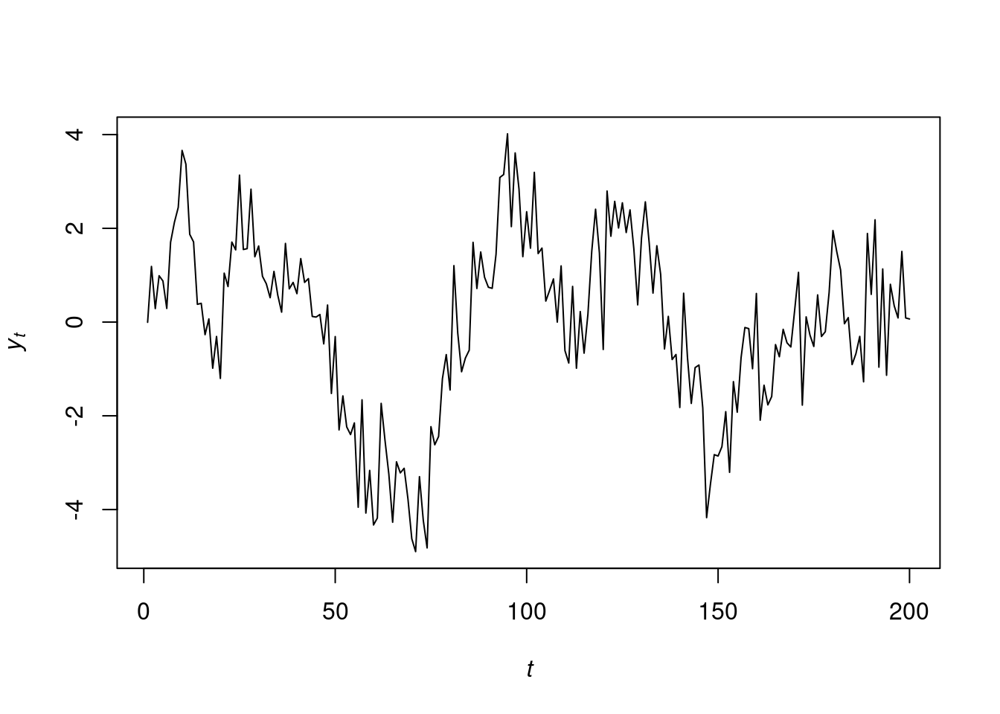
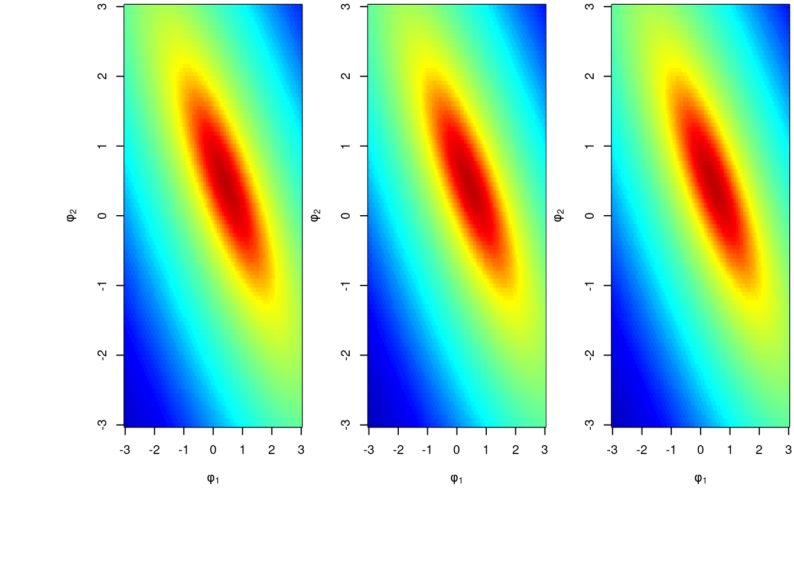
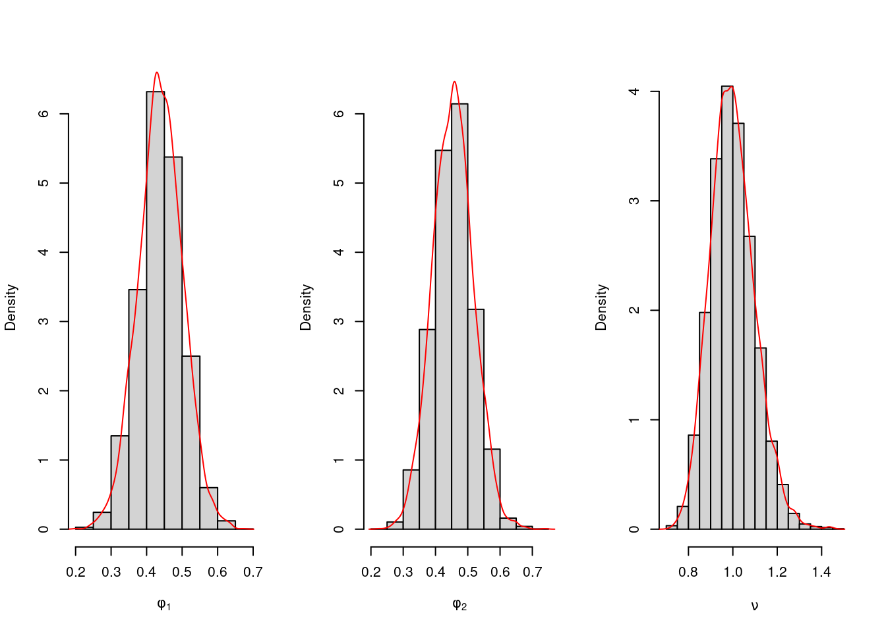
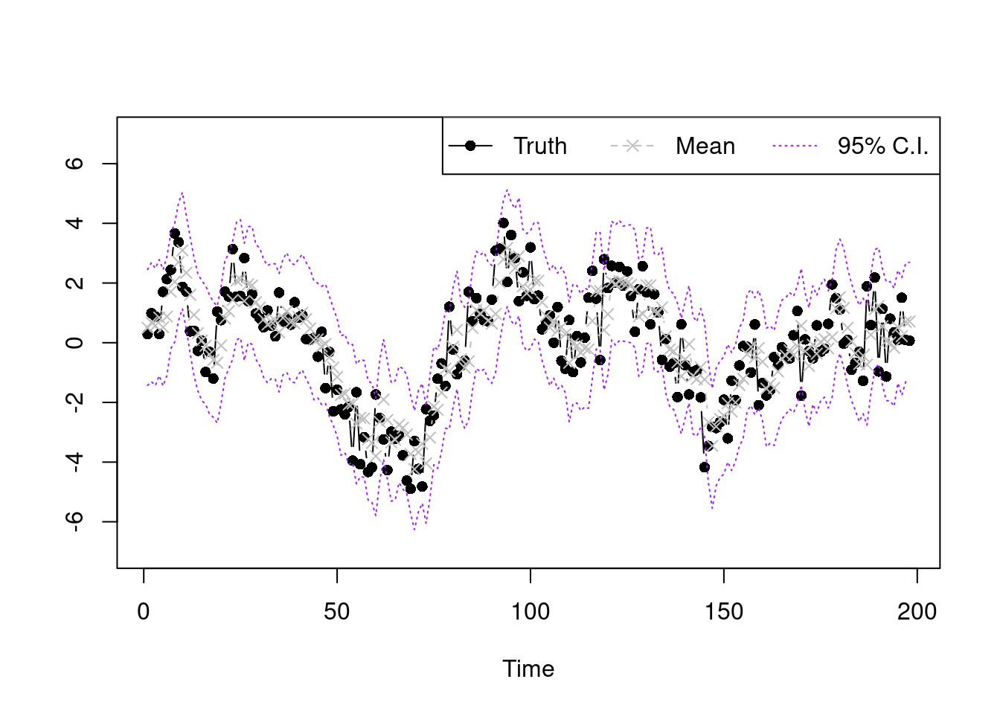

We give an example about fitting an AR(2) model using simulated data. We simulate 200 observations from the following model: \[
y_{t} = 0.5 y_{t-1} + 0.4 y_{t-2} + \epsilon_{t}, \quad \epsilon_{t} \sim \mathcal{N}(0, 1)
\]
── Attaching core tidyverse packages ──────────────────────── tidyverse 2.0.0 ──
✔ dplyr 1.1.4 ✔ readr 2.1.6
✔ forcats 1.0.0 ✔ stringr 1.5.1
✔ lubridate 1.9.4 ✔ tibble 3.3.0
✔ purrr 1.1.0 ✔ tidyr 1.3.1
── Conflicts ────────────────────────────────────────── tidyverse_conflicts() ──
✖ dplyr::filter() masks stats::filter()
✖ dplyr::lag() masks stats::lag()
ℹ Use the conflicted package (<http://conflicted.r-lib.org/>) to force all conflicts to become errors

Figure 3.1: Example time series from a given AR(2) model.
3.1.2 Prior sensitivity analysis
Now, we perform a prior sensitivity analysis for the choice of hyperparameters in prior distribution. We choose three sets of prior hyperparameters and plot the posterior distribution \(p(\phi_{1}, \phi_{2} \mid y_{1:n})\). The three sets of prior hyperparameters are:
## prior sensitivity analysis## plot posterior distribution of phi_1 and phi_2 on a grid library(colorRamps)library(leaflet)library(fields)
Loading required package: spam
Spam version 2.11-3 (2026-01-05) is loaded.
Type 'help( Spam)' or 'demo( spam)' for a short introduction
and overview of this package.
Help for individual functions is also obtained by adding the
suffix '.spam' to the function name, e.g. 'help( chol.spam)'.
Attaching package: 'spam'
The following objects are masked from 'package:base':
backsolve, forwardsolve
Loading required package: viridisLite
Loading required package: RColorBrewer
Try help(fields) to get started.
Attaching package: 'fields'
The following object is masked from 'package:leaflet':
addLegend
library(mvtnorm)
Attaching package: 'mvtnorm'
The following objects are masked from 'package:spam':
rmvnorm, rmvt
## generate gridN =100coordinates_1=seq(-3,3,length.out = N)coordinates_2=seq(-3,3,length.out = N)coordinates=expand.grid(coordinates_1,coordinates_2)coordinates=as.matrix(coordinates)## set upp=2## order of AR processn.all=length(y.sample) ## T, total number of dataY=matrix(y.sample[3:n.all],ncol=1)Fmtx=matrix(c(y.sample[2:(n.all-1)],y.sample[1:(n.all-2)]),nrow=p,byrow=TRUE)n=length(Y)## function to compute parameters for the posterior distribution of phi_1 and phi_2## the posterior distribution of phi_1 and phi_2 is a multivariate t distributioncal_parameters=function(m0=matrix(c(0,0),nrow=2),C0=diag(2),n0,d0){ e=Y-t(Fmtx)%*%m0 Q=t(Fmtx)%*%C0%*%Fmtx+diag(n) Q.inv=chol2inv(chol(Q)) ## similar as solve, but more robust A=C0%*%Fmtx%*%Q.inv m=m0+A%*%e C=C0-A%*%Q%*%t(A) n.star=n+n0 d.star=t(Y-t(Fmtx)%*%m0)%*%Q.inv%*%(Y-t(Fmtx)%*%m0)+d0 params=list() params[[1]]=n.star params[[2]]=d.star params[[3]]=m params[[4]]=Creturn(params)}## evaluate density at the grid pointsget_density=function(param){ location=param[[3]] scale=as.numeric(param[[2]]/param[[1]])*param[[4]] density=rep(0,N^2)for (i in1:N^2) { xi=coordinates[i,] density[i]=dmvt(xi,delta=location,sigma=scale,df=param[[1]]) } density_expand=matrix(density,nrow=N)return(density_expand)}## calculate density for three sets of hyperparametersparams1=cal_parameters(n0=2,d0=2)params2=cal_parameters(n0=6,d0=1)params3=cal_parameters(m0=matrix(c(-0.5,-0.5),nrow=2),n0=6,d0=1)col.list=matlab.like2(N)Z=list(get_density(params1),get_density(params2),get_density(params3))op <-par(mfrow =c(1,3),oma =c(5,4,0,0) +0.1,mar =c(4,4,0,0) +0.2)image(coordinates_1,coordinates_2,Z[[1]],col=col.list,zlim=range(unlist(Z)),xlab=expression(phi[1]),ylab=expression(phi[2]))image(coordinates_1,coordinates_2,Z[[2]],col=col.list,zlim=range(unlist(Z)),xlab=expression(phi[1]),ylab=expression(phi[2]))image(coordinates_1,coordinates_2,Z[[3]],col=col.list,zlim=range(unlist(Z)),xlab=expression(phi[1]),ylab=expression(phi[2]))

3.1.3 Posterior inference
We now sample 5000 sets of (\(\phi_{1}\), \(\phi_{2}\), \(\nu\)) from their marginal posterior distributions and plot them. For prior hyperparameters we take \(\mathbf{m}_{0} = \begin{bmatrix} 0 & 0\end{bmatrix}^{\top}\), \(\mathbf{C}_{0} = \mahtbf{I}_{2}\), \(n_{0}=2\) and \(d_{0}=2\).
m0=matrix(rep(0,p),ncol=1)C0=diag(p)n0=2d0=2e=Y-t(Fmtx)%*%m0Q=t(Fmtx)%*%C0%*%Fmtx+diag(n)Q.inv=chol2inv(chol(Q))A=C0%*%Fmtx%*%Q.invm=m0+A%*%eC=C0-A%*%Q%*%t(A)n.star=n+n0d.star=t(Y-t(Fmtx)%*%m0)%*%Q.inv%*%(Y-t(Fmtx)%*%m0)+d0n.sample=5000nu.sample=rep(0,n.sample)phi.sample=matrix(0,nrow=n.sample,ncol=p)for (i in1:n.sample) {set.seed(i) nu.new=1/rgamma(1,shape=n.star/2,rate=d.star/2) nu.sample[i]=nu.new phi.new=rmvnorm(1,mean=m,sigma=nu.new*C) phi.sample[i,]=phi.new}par(mfrow=c(1,3))hist(phi.sample[,1],freq=FALSE,xlab=expression(phi[1]),main="",ylim=c(0,6.4))lines(density(phi.sample[,1]),type='l',col='red')hist(phi.sample[,2],freq=FALSE,xlab=expression(phi[2]),main="",ylim=c(0,6.4))lines(density(phi.sample[,2]),type='l',col='red')hist(nu.sample,freq=FALSE,xlab=expression(nu),main="")lines(density(nu.sample),type='l',col='red')

3.1.4 Model checking by in-sample prediction and interval estimation
To check whether the model fits well, we plot the posterior point and interval estimate for each point.
## get in sample predictionpost.pred.y=function(s){ beta.cur=matrix(phi.sample[s,],ncol=1) nu.cur=nu.sample[s] mu.y=t(Fmtx)%*%beta.cursapply(1:length(mu.y), function(k){rnorm(1,mu.y[k],sqrt(nu.cur))})} y.post.pred.sample=sapply(1:5000, post.pred.y)## show the resultsummary.vec95=function(vec){c(unname(quantile(vec,0.025)),mean(vec),unname(quantile(vec,0.975)))}summary.y=apply(y.post.pred.sample,MARGIN=1,summary.vec95)plot(Y,type='b',xlab='Time',ylab='',ylim=c(-7,7),pch=16)lines(summary.y[2,],type='b',col='grey',lty=2,pch=4)lines(summary.y[1,],type='l',col='purple',lty=3)lines(summary.y[3,],type='l',col='purple',lty=3)legend("topright",legend=c('Truth','Mean','95% C.I.'),lty=1:3,col=c('black','grey','purple'),horiz = T,pch=c(16,4,NA))

3.2 Prediction for AR models
We can use the autoregressive nature of the process to make predictions for future observations \(y_{t}\) where \(t > T\): \[
y_{T+h}^{(s)} \sim \mathcal{N}\left(\sum_{j=1}^{p} \phi_{j}^{(s)} y_{T+h-j}^{(s)}, \nu^{(s)}\right)
\] with \[
y_{T+h-j}^{(s)} = \begin{cases}
y_{t} & \text{if } T + h - j \le T \\
y_{t}^{(s)} &\text{if } T+h-j > T
\end{cases}
\]